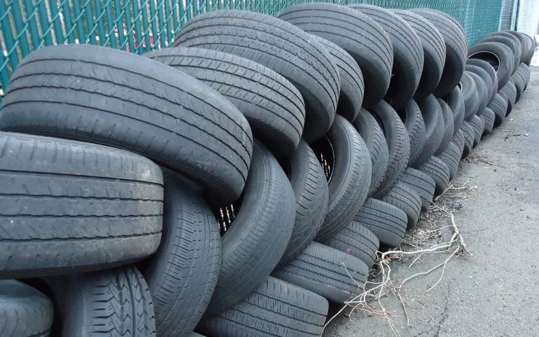

▲ 트레드 홈 바닥에 볼록하게 솟은 부분이 마모 한계선(트레드웨어 인디케이터)이다. 타이어 옆면의 △ 표시를 따라가면 위치를 찾을 수 있다 ⓒ VVVN, Wikimedia Commons (CC BY 3.0)
연일 이어지는 폭염에 낮 시간 아스팔트 노면 온도가 50~60도까지 오르는 날이 늘고 있습니다. 그런데 이 시기에 유독 늘어나는 사고가 있습니다. 바로 타이어 파열 사고입니다. 현대해상 교통기후환경연구소 분석에 따르면 기온이 1도 오를 때마다 타이어 펑크 사고가 약 2.84건씩 늘고, 기온이 30도를 넘어서면 사고 발생률이 평소보다 66% 급증합니다. 게다가 타이어 파열 사고는 일반 교통사고보다 치사율이 최대 12배 이상 높은 것으로 나타났습니다. 마모 한계선까지 닳은 타이어라면 이 위험은 한층 더 커집니다. 지금이야말로 내 타이어 상태를 직접 확인해봐야 할 때입니다.
1. 왜 하필 폭염철에 타이어가 잘 터질까

▲ 트레드가 닳을수록 열을 발산하는 능력이 떨어져 폭염철 파열 위험이 커진다 ⓒ Tomwsulcer, Wikimedia Commons (CC0)
타이어는 주행 중 노면과의 마찰로 끊임없이 열을 냅니다. 평소에는 트레드 홈과 타이어 내부 구조가 이 열을 밖으로 흘려보내지만, 노면 온도 자체가 50~60도를 넘나드는 폭염철에는 타이어가 흡수하는 열량이 급격히 늘어납니다. 여기에 공기압이 조금이라도 낮으면 타이어 옆면이 물결치듯 떨리는 '스탠딩 웨이브' 현상이 나타나는데, 이 상태로 고속 주행을 이어가면 내부 온도가 한계치를 넘어서며 타이어가 터질 수 있습니다. 트레드가 마모 한계선 가까이 닳은 타이어는 애초에 열을 식힐 홈 자체가 얕아진 상태라, 같은 조건에서도 파열까지 이르는 시간이 훨씬 짧아집니다.
| 지표 | 수치 |
|---|---|
| 기온 1도 상승 시 | 펑크 사고 약 2.84건 증가 |
| 기온 30도 초과 시 | 사고 발생률 66% 급증 |
| 타이어 파열 사고 치사율 | 일반 사고 대비 최대 12배 |
| 폭염 기간 긴급출동 수요 | 평소 대비 31% 증가 |
2. 마모 한계선, 직접 확인하는 방법

▲ 같은 주행거리라도 타이어별로 마모 속도가 다르므로 정비소 점검 전 직접 육안으로 비교해보는 습관이 필요하다 ⓒ Trubble, Wikimedia Commons (CC BY-SA 2.0)
가장 정확한 방법은 타이어 옆면에 새겨진 △ 표시를 찾아 그 위치의 트레드 홈을 살펴보는 것입니다. 홈 바닥에 볼록하게 솟아 있는 부분이 트레드웨어 인디케이터이며, 이 높이가 법적 마모 한계인 1.6mm를 나타냅니다. 트레드 표면이 이 돌기와 같은 높이까지 닳았다면 더 미루지 말고 교체해야 합니다.
3. 도구 없이 확인하는 100원 동전 테스트
▲ 100원 동전을 트레드 홈에 거꾸로 꽂아 이순신 장군의 사모(모자) 부분이 보이는지 확인한다
별도 도구 없이 확인하고 싶다면 100원짜리 동전을 트레드 홈에 거꾸로 세워보는 방법이 있습니다. 동전을 꽂았을 때 이순신 장군의 사모(관모) 부분까지 보인다면 트레드 깊이가 마모 한계에 가까워졌다는 뜻으로, 교체를 진지하게 고려해야 할 시점입니다. 사모가 홈에 완전히 가려 보이지 않는다면 아직 마모 한계선까지는 여유가 있는 상태입니다.